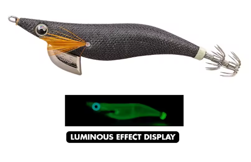

El egi fino de luna llena: Muy util en aguas claras, luna llena y escenarios muy luminosos.
| Condición | Eficiencia |
|---|---|
| 🌕🌊 Luna llena / agua clara | 🟢🟢 Muy alta |
| 🌙💡 Noche clara | 🟢🟢 Muy alta |
| 🦑😴 Calamares pasivos | 🟢 Alta |
| 🦑🔥 Calamares activos | 🟢 Alta |
| 🌫️ Aguas turbias | 🟡 Media |